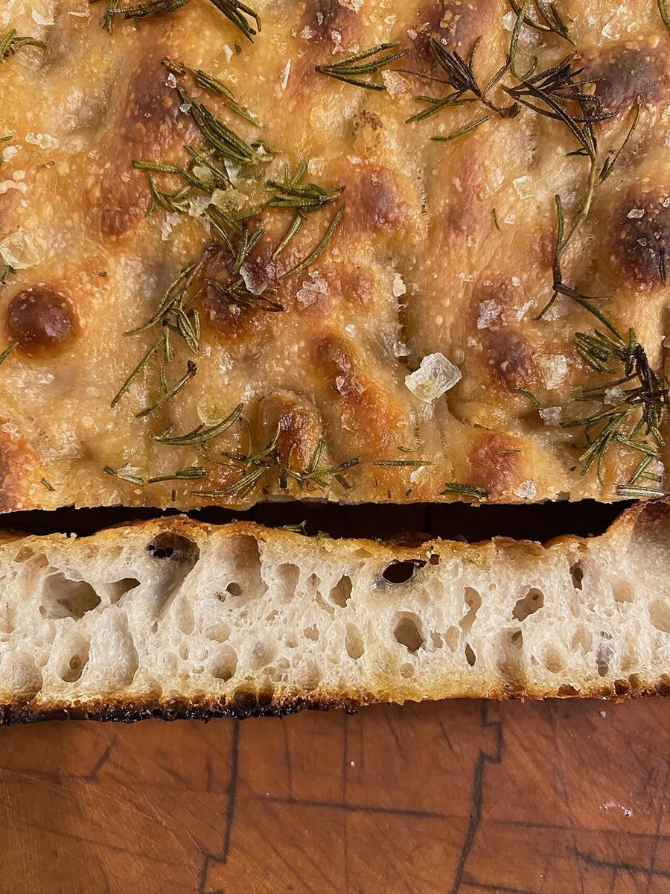

制作側の連想
「ぬりえ」のように組んだページ
店名の由来は分かりません。制作側は「ぱん」と「カフェ」という言葉から、焼き色や器など色とりどりのものを連想し、番号の指定どおりに色をのせていく「ぬりえ」の形でページを組みました。制作側の連想で、お店の理念・由来とは無関係です。
ぬりえの凡例
5つの番号、5つのページ
番号と色が、そのままページの色になっています。
ぬる前と、ぬったあと
下絵(モノクロ)と、色をのせた絵
写真は、お店のものではないフリー素材のイメージです。モノクロの写真は「まだぬっていない下絵」の見立てで、番号の色をのせたものと交互に並べています。





ご案内
お店のこと(確認できたものだけ)
| 所在地 | 〒870-0867 大分県大分市東野台1丁目17-7 |
|---|---|
| 電話 | 097-549-3963 |
| 営業時間 | 準備中 |
| 定休日 | 準備中 |
| ご予約 | 準備中 |
| 駐車場 | 準備中 |
| SNS | Instagram @paincafecoduchi |